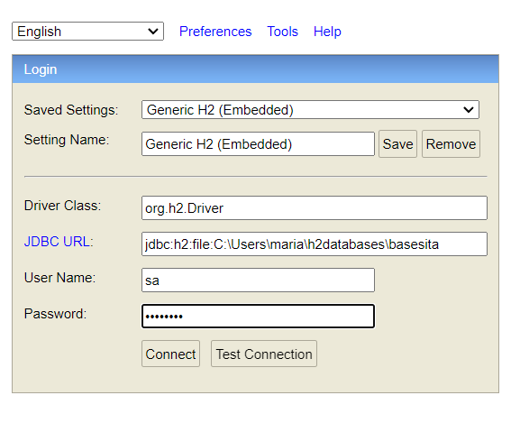
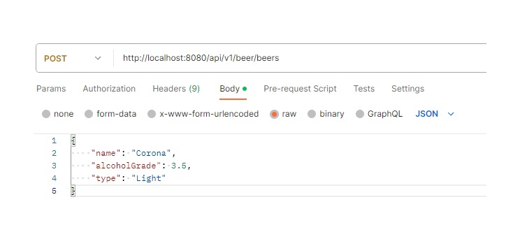
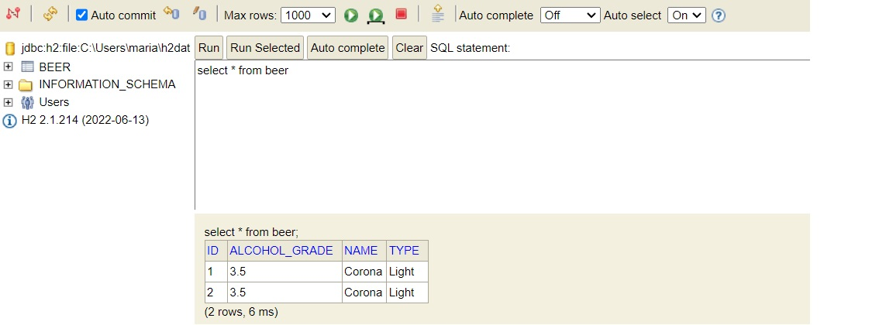

Este proyecto es un ejemplo de como realizar una conección a base de datos con H2 usando Spring Boot con JPA. El proyecto crea una base de datos de cervezas
- Hay que ingresar al link http://localhost:8080/h2-console
- Ingresar la contraseña: Password 
- Abrir postman e ingrsar la siguiente ruta http://localhost:8080/api/v1/beer/beers
- Se envia la petición como se ve en la imagen 
- Luego en el H2 se verifica la creacion de la nueva cerveza en la base de datos 